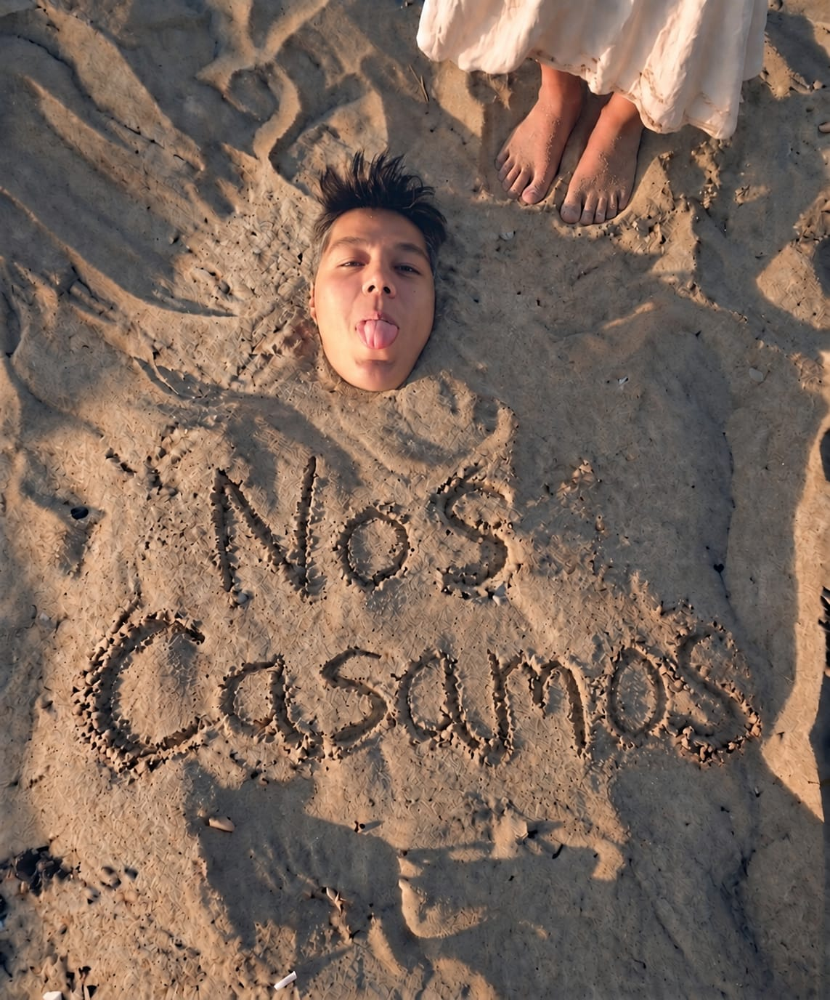
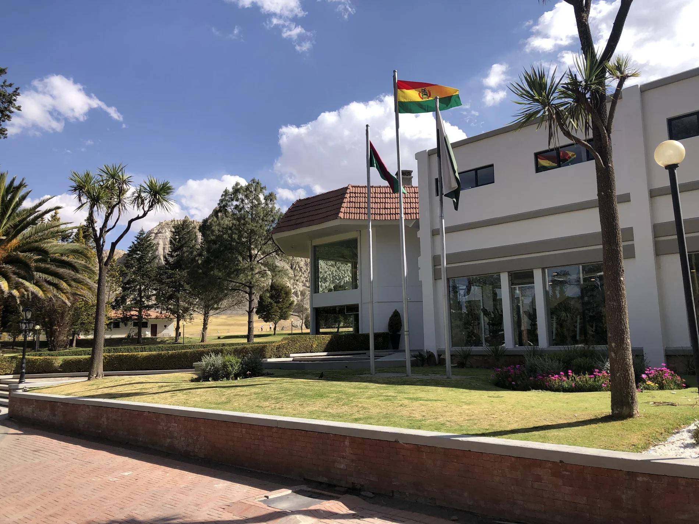

15:00CEREMONIA RELIGIOSA

Jose&Judit
Todo es más bonito cuando es contigo
SÁBADO3
OCTUBRE 2026
JueVieSábDomLun12345
FALTA MUY POCO
—DÍAS
—HORAS
—MINUTOS
—SEGUNDOS
Las muchas aguas no podrán apagar el amor
CANTARES 8:7
Con la bendición de Dios y nuestros padres
PADRES DEL NOVIO
Benito
Tomasa
PADRES DE LA NOVIA
María
Martín
Deseamos que sean testigos de este gran día.
CON CARIÑO PARA
Por eso, hemos reservado
para celebrar juntos.
Invitación personal e intransferible.
Ceremonia y Recepción

Club de Golf
Mallasilla · La Paz
VER UBICACIÓNEstacionamiento disponible para nuestros invitados.
Itinerario
16:00CÓCTEL & FESTÍN DE BIENVENIDA
17:20ENTRADA DE LOS NOVIOS
17:40MÚSICA EN VIVO
19:00CENA DE TRES TIEMPOS
20:15CELEBREMOS JUNTOS
23:00HASTA PRONTO
Confirma tu asistencia
Esperamos de corazón poder celebrar este día junto a ti.
Si esta vez no puedes acompañarnos, lo entendemos perfectamente; solo te pedimos que nos lo hagas saber.
Por favor, confírmanos antes del
25 DE SEPTIEMBRE
Estamos preparando tu invitación…
¡Gracias por confirmar!
Hemos guardado tu confirmación. Puedes modificarla hasta el 25 de septiembre.
Código de vestimenta
FORMAL
ELLOS
Traje
ELLAS
Vestido
Prepárate para brillar
Te invitamos a lucir tus atuendos más elegantes y deslumbrantes, reservando el color blanco para la novia.
Una celebración para adultos
Queremos que disfrutes, celebres y bailes durante esta ocasión tan especial.
Hemos preparado nuestra boda exclusivamente para adultos.
Hay canciones que nos llevan a momentos, personas e historias especiales.
¿Qué canción te gustaría escuchar y bailar con nosotros?
Primero confirma tu asistencia. Si podrás acompañarnos, aquí se habilitará tu sugerencia musical.
Tal vez tu canción también forme parte de nuestra noche.
¡Gracias por tu sugerencia!
Si estás pensando en un detalle para nosotros, hemos preparado esta opción para hacerlo más sencillo.
ESCANEA EL CÓDIGO QR
Si prefieres entregarnos tu detalle personalmente, el día de nuestra boda también encontrarás un ánfora para sobres en el salón.